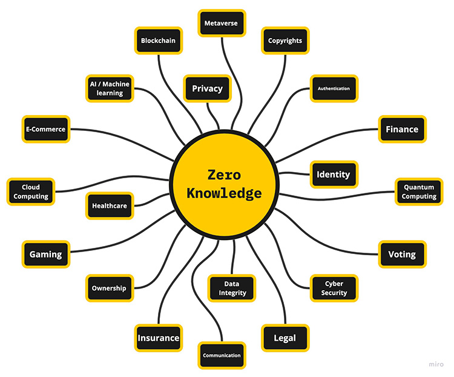

Community Guidelines
Welcome to Ingopedia!
This is a community-driven effort to compile a comprehensive collection of resources and information related to Zero Knowledge Proofs. Our goal is to provide a one-stop-shop for anyone interested in learning about ZKPs, from beginners to experts.
We invite the community to help us keep Ingopedia up-to-date and relevant. If you have any suggestions or contributions, please feel free to submit them through the appropriate channels. We believe that the power of the community lies in collaboration and sharing knowledge, so we encourage everyone to get involved.
To keep this book organized, we ask that you use the designated sections for your contributions. If you have a new resource to share, please add it to the appropriate section. If you are unsure where to add your contribution, feel free to reach out to the moderators for guidance.
Thank you for being a part of our ZKP community and helping us build a valuable resource for all.
Note: The branch master contains the src files for the ingopedia mdbook. Each page from the deployment page has a editable button that allows one to edit the markdown file of the specific page.
The old Ingopedia is still available in the branch main, we are planning to continue in the mdbook format. Suggestions are welcome.
Glossary
A B C D E F G H I J K L M N O P Q R S T U V W X Y Z
A
ASIC (Application-Specific Integrated Circuit) - A specialized integrated circuit designed for a specific application or function, offering optimized performance and efficiency by implementing dedicated hardware tailored to that specific task.
Authentication - The process of verifying the identity of a user, device, or system to ensure that it is genuine and authorized to access certain resources or information.
Aurora - Aurora is a Zero Knowledge Proof system that combines zk-SNARKs and Bulletproofs to achieve compact proofs for general-purpose computations.
AuroraLight - AuroraLight is an improvement over Aurora that achieves faster prover times and smaller proof sizes while maintaining its generality and security properties.
B
Bulletproofs - Bulletproofs are a non-interactive Zero Knowledge Proof construction that enables efficient verification of range proofs and arithmetic circuits.
C
Cryptography - The practice and study of secure communication techniques, including encryption, decryption, and various cryptographic protocols.
Completeness - The property of a Zero Knowledge Proof protocol that guarantees an honest prover can convince a verifier of a correct statement.
Commitment Scheme - A cryptographic protocol that enables a party to commit to a value without revealing it and later prove the committed value’s consistency.
Computational Zero Knowledge - The lowest level of security among the three types of Zero Knowledge proofs, ensuring that an efficient computational algorithm cannot distinguish between valid and invalid proofs within a reasonable amount of time.
D
E
F
Fiat-Shamir Heuristic - A technique used to transform an interactive Zero Knowledge Proof into a non-interactive form by simulating the verifier’s challenges.
FPGA (Field-Programmable Gate Array) - A reconfigurable integrated circuit that can be programmed and reprogrammed to perform a wide range of tasks, offering flexibility and customization for various applications without requiring a fixed design.
Fractal - Fractal is a non-interactive Zero Knowledge Proof system that allows for scalable and efficient verification of statements in a distributed setting.
G
Groth16 - Groth16 is a non-interactive Zero Knowledge Proof system that utilizes elliptic curve pairings to achieve succinctness and efficient verification.
H
Homomorphic Encryption - A form of encryption that allows mathematical operations to be performed on encrypted data without decrypting it.
Hardware Acceleration - The use of specialized hardware components or instructions to perform computations more efficiently than software-based approaches.
Halo - Halo is a recursive proof composition technique that enables the construction of compact Zero Knowledge Proofs for general arithmetic circuits.
Hyrax - Hyrax is a Zero Knowledge Proof system that provides efficiency and succinctness for verifying arithmetic and boolean circuit satisfiability.
I
Interactive Proof - A Zero Knowledge Proof where the prover and verifier engage in multiple rounds of communication to establish the validity of the proof.
J
K
L
Ligero - Ligero is a Zero Knowledge Proof system designed specifically for blockchain applications, offering low computational and storage requirements for verification.
M
Marlin - Marlin is a Zero Knowledge Proof system that leverages recursive composition to construct large-scale Zero Knowledge Proofs with low proof sizes and verification times.
Merkle Tree - A tree data structure in cryptography that enables efficient verification of the integrity and membership of data elements.
Multi-party Computation (MPC) - A cryptographic protocol that enables multiple parties to jointly compute a function over their private inputs while preserving the privacy of those inputs, allowing them to collectively obtain the desired result without revealing individual data to each other.
N
Non-interactive Proof - A Zero Knowledge Proof where the prover generates a single proof without any interaction with the verifier.
NTT (Number Theoretic Transform) - A mathematical technique used for efficient polynomial multiplication and fast Fourier transforms in various applications such as signal processing, error correction codes, and cryptography.
O
P
Pairing-Based Cryptography - A cryptographic approach that leverages mathematical pairings to perform various operations and enable advanced cryptographic protocols.
Perfect Zero Knowledge - A level of security provided by a Zero Knowledge proof where the verifier gains no additional knowledge about the secret information being proved, except for the validity of the statement.
Plonk - Plonk (Permutation-based SNARK) is a Zero Knowledge Proof system that utilizes permutation arguments to achieve succinctness and efficiency.
Privacy - The state of being free from unauthorized intrusion, surveillance, or disclosure of personal or sensitive information.
Proof Of Knowledge - A cryptographic concept where a prover demonstrates possession of certain information or knowledge to a verifier without revealing the actual information.
Prover - The entity in a Zero Knowledge Proof protocol that possesses knowledge of a secret and aims to prove its knowledge to the verifier.
Pseudorandom Function - A pseudorandom function (PRF) is a deterministic function that takes an input and produces an output that appears random, even though it is generated by a deterministic algorithm, making it indistinguishable from a truly random function for practical purposes.
Q
QAP (Quadratic Arithmetic Programs) - QAP is a method to represent arithmetic circuits as quadratic polynomials, commonly used in Zero Knowledge Proof systems for efficient proof generation and verification.
R
R1CS (Rank-1 Constraint Systems) - R1CS is a mathematical framework used in Zero Knowledge Proof systems to represent computational problems as sets of constraints.
Redshift - Redshift is a Zero Knowledge Proof system designed for blockchain applications, offering scalability, efficiency, and post-quantum security.
Ring Signature - A cryptographic digital signature scheme that allows a user to sign a message on behalf of a group (or ring) of potential signers, while maintaining the privacy of the actual signer’s identity within the group.
S
Security - The protection of hardware, software, and data from unauthorized access, theft, damage, or disruption, aiming to maintain confidentiality and integrity.
Side-channel Attacks - Attacks that exploit unintended information leakage, such as timing, power consumption, or electromagnetic radiation, to infer secret information.
Statistical Zero Knowledge - A level of security offered by a Zero Knowledge proof where the verifier cannot distinguish between a valid proof and a false proof, except with an extremely low probability.
Sonic - Sonic (Scalable, Non-Interactive, and Compact) is a Zero Knowledge Proof system that offers scalability and efficiency for verifying large computations.
Soundness - The property of a Zero Knowledge Proof protocol that ensures an honest prover cannot convince a verifier of an incorrect statement.
Spartan - Spartan is a Zero Knowledge Proof system that achieves transparency, scalability, and post-quantum security without requiring a trusted setup.
Supersonic - Supersonic is a Zero Knowledge Proof system that provides high-performance and efficient verification of arithmetic circuits and boolean satisfiability.
T
Trusted Execution - The execution of a program or process in a secure and isolated environment, protecting it from tampering and unauthorized access.
Trusted Setup - The process of generating initial parameters for a Zero Knowledge Proof protocol, ensuring that they do not reveal any secret information.
U
V
Verifier - The entity in a Zero Knowledge Proof protocol that challenges the prover’s claim and verifies the validity of the proof without gaining knowledge of the secret.
W
Witness Indistinguishable Proof - A cryptographic proof that guarantees that given two valid proofs for the same statement, it is computationally infeasible for an adversary to distinguish which proof corresponds to the true witness.
X
Y
Z
Zero Knowledge Proof - A cryptographic protocol where a prover can demonstrate knowledge of a secret without revealing the secret itself, convincing the verifier of its validity.
Zero Knowledge Property - The property of a Zero Knowledge Proof protocol that assures the verifier learns no additional information about the secret beyond its validity.
Zk-rollups - zk-rollups, short for Zero-Knowledge Rollups, are Layer 2 scaling solutions for blockchain networks that utilize zero-knowledge proofs to aggregate and validate multiple transactions off-chain, improving scalability and reducing transaction fees while maintaining the security and trustlessness of the underlying blockchain.
zk-STARKs - Zero-Knowledge Scalable Transparent Arguments of Knowledge (zk-STARKs) are Zero Knowledge Proofs that achieve transparency and scalability without a trusted setup.
zk-SNARKs - Zero-Knowledge Succinct Non-Interactive Arguments of Knowledge (zk-SNARKs) are Zero Knowledge Proofs that provide succinctness and non-interactivity.
ZPU - A Zero Knowledge Processing Unit (ZPU) is an application-specific integrated circuit (ASIC) designed to accelerate zero-knowledge proof computations and enhance the efficiency of cryptographic protocols.
Zero Knowledge Proofs
Curated Resources
Our curated resources consist of carefully selected, links, linktrees and other almanacs like “Ingopedia”. These resources are aimed at helping users access high-quality information in a quick and efficient manner.
Video Lecture Series
Our Video lecture series on ZK proofs offers in-depth and engaging presentations that cover the fundamentals and advanced topics of zero-knowledge proofs. These lectures are designed to educate and inform a wide range of audiences, and will contain series of videos on ZKP’s various concepts.
Articles
Our articles on ZK proofs are comprehensive and educational pieces that delve into the intricacies of zero-knowledge proofs. They consist of blogs, articles, PDFs, and notes. These articles aim to provide a clear understanding of this cutting-edge technology, its used-case applications, its vulnerabilities and its significance.
Hands on ZK
Our hands-on approach to learning ZK proofs provides interactive and practical training experiences that allow participants to build their skills and knowledge in an engaging way. These hands-on workshops, tutorials, and projects are designed to help learners apply their understanding of ZK proofs in real-world situations, making them an invaluable resource for anyone looking to further their expertise in this field.
Protocols
Our collection of mathematical papers, protocols, and code on ZK proofs is a comprehensive resource for researchers, developers, and students in the field of cryptography. These materials provide a deep understanding of the theories, implementations, and practical applications of zero-knowledge proofs, serving as a valuable reference for anyone interested in this cutting-edge technology.
Mathematics
The resources on the mathematics behind ZK proofs delve into the complex theories and mathematical concepts that underpin this intive technology. These resources are intended for those with a strong background in mathematics, or those looking to deepen their understanding of the mathematical foundations of zero-knowledge proofs and their applications.
Curated Resources
Our curated resources consist of carefully selected, links, linktrees and other almanacs like “Ingopedia”. These resources are aimed at helping users access high-quality information in a quick and efficient manner.
What you will find here: Links, Linktrees, Almanacs
References
A collection of links and Almanacs breaking down ZKPs and related topics.
- zkProof Standards - Resource
- ZK Mesh - resource
- Zero Knowledge Fm
- Curated list of ZKP implementations
- Awesome - Matter labs - ZK proofs
- Awesome - Mikerah - Privacy on Blockchains
- Awesome - Worldcoin - ZK Machine Learning
- Awesome - ChengYueJia - ZK Verifier
- Resource: Awesome_Plonk
- Resource: Awesome Folding
- ZK research 0x
- ZK canon
- Moonmath manual
- Rareskills ZKP book
- ZKP knowledge base: Delendum
- ZKP beginner resources
- Proofs Arguments and Zero Knowledge - Justin Thaler
- Hash based SNARGs book - Chiesa and Yogev
- Awesome ZKEVM
- Awesome ZKVM
- Awesome lattice FPGA’s
Libraries
A collection of libraries where you can create a ZKP.
- Rust Cryptographic libraries
- Arkworks
- Lambdaworks by Lambdaclass
- Gnark: in Golang
- Noir
- Circom: creating zk circuits
- Halo 2 - library
- Halo2 source code guide
- Guide to halo2 API
- Awesome: Halo2
- Halo2 club
- Latest development in Halo2
- Guide to Halo2 source code
- ZK MOOC halo2 circuit building
- Anatomy of proof generation by Scroll (KZG) version
- Halo2 workshop by 0xparc
- lookup args in Halo2
- circuit development in halo2
- Icemelon circuit development tutorial
- Halo2 tutorial: ZK natives
- Getting started with halo2 Axiom
- Halo2 app and wasm 1
- Halo2 app and wasm 2
- Halo2 review
- Automated analysis of halo2 circuits
- halo2 circuitry tutorial
- Zero cost commitments in Halo2
- Splitting and parallelizing proofs in ezkl
- origami folding scheme for halo2 lookup
- Halo2: Zk security book
- Zokrates
- Crrl: Cryptography research library - Thomas Pornin
- Bellman (not updated)
- libsnark in C++
- Snarky frontend
- Constantine
- Cairo
- Plonky3
Math/Crypto/Lattice libraries
- FLINT - number theory
- CryptoPP
- nalgebra - linear algebra for rust
- NTL lattice lib
- Lazarus rust
- Lazer c++
- Lattice based snarks over libsnark - c++
HW libraries
GPU for ZK
learn GPUs/FPGAs
FPGA for ZK
Lecture Series
Our Video lecture series on ZK proofs offers in-depth and engaging presentations that cover the fundamentals and advanced topics of zero-knowledge proofs. These lectures are designed to educate and inform a wide range of audiences, and will contain series of videos on ZKP’s various concepts.
What you will find here: Video playlists of Podcasts, Lectures, and University/Professional Classes
ZK courses
University and professional level courses on ZK.
Discussions/Seminars
Podcasts and lecture playlists on various ZKP related topics.
- ZK whiteboard Sessions
- ZK hack
- ZK summit
- Zk study club
- ZK privacy in cosmos
- ZK podcast
- ZK Sessions
- RISC0 architecture
- RISC0 Study club
- Modular arithmetic visually
- PLONK by David Wong
- Ingonyama: Moon math club
- a16z summer seminars
- ZK Hack: Thaler study group
- ZKP workshop 2022
- ZK Shanghai 2023
Advanced Courses/Topics
Advanced University and professional level courses on ZK.
- Meta complexity bootcamp - Simons Institute
- Foundations of probabilistic proofs - Chiesa
- Probabilistically checkable and interactive proofs - Chisea
- Algebraic error correcting codes - Stanford
- ZKP composition and recursion - Wong
- Introduction to Elliptic curves
- BIU winter school Bilinear pairings in cryptography
- BIU winter school: Advances in MPC
- Foundations of Block chains - Tim Roughgarden
- BLockchain and money MIT 2018
- DEFI MOOC
- Fuzzing workshop
- optimizations for fast algorithms bootcamp
- Cache oblivious algorithms
Articles
Our articles on ZK proofs are comprehensive and educational pieces that delve into the intricacies of zero-knowledge proofs. They consist of blogs, articles, PDFs, and notes. These articles aim to provide a clear understanding of this cutting-edge technology, its used-case applications, its vulnerabilities and its significance.
What you will find here: Blogs, Articles, PDFs, Notes
ZK Introductory
ZKSNARKS
STARKS
Applications
ZK Introductory
Understanding ZK from beginner to advanced on a surface level.
Beginner
- Amit Sahai explaining ZK to people of all ages - video
- Nico’s ZK Jargon Decoder)
- KU Lueven: Intro to ZK part 1
- Interactive_proofs and Zk
- The incredible Machine - Aviv Zohar
- What is a ZKP system - Alin Tomescu
- A friendly intro to ZKP
- Life cycle of a ZKP
- A Succinct Story of Zero Knowledge
Intermediate
- An introduction to how zk snarks are possible - Vitalik
- Zk blog
- Math survival kit for zk developers - lambdaclass
- Understanding polynomials
- Intro to ZK in block chain and economics
- A journey into ZKP - David Wong
Advanced
- An incomplete guide to zk: why zk matters
- Why and how Zero knowledge works
- zk Snarks a gentle introduction
- The math behind ZkSNARK - video
- De-mystifying Zk proofs -workshop
- An evolution of ZKP - Sarah Meiklejohn
- Zk_primer_1 M.Green
- Zk_primer_2 M.Green
- Zero Knowledge: A tutorial by Oded Goldreich
- Cryptographic Protocls: lectures
- Using zkSnarks for privacy: Vitalik
- STARK vs SNARK
- SNARK vs STARK vs Bulletproofs
- ZKp from Information theoretic Proof systems 1 - Yuval Ishai
- ZKP from Information theoretic Proof systems 2 - Yuval Ishai
- ZKP - Modular approach -Yuval Ishai
- Misconceptions in ZK-Snarks - Thaler
- Introduction to range proofs
- Whats next in programmable cryptography
Ingonyama Blogs
Check out blogs, papers, pieces, and videos published by the Ingonyama Team
Sumcheck 201
Application of Graph Methods for Efficient Quotient Polynomial Evaluation in Halo2
Fast Danksharding Video & Slides
Recap: ZK Capture the Flag
Introducing Blaze: ZK Acceleration for FPGA
Hardware Review: GPUs , FPGAs and Zero Knowledge Proofs
RISC Zero Prover Protocol & Analysis
ZK Hardware Table Stakes part 1 -MSM
Unleashing Secure AI
Fast Danksharding using ICICLE
Introducing ICICLE: An Open-Source GPU Library for Zero Knowledge Acceleration
A Brief History of Lookup Arguments
How Zero-Knowledge Proofs Will Change Gaming Forever
Intro to ECNTT from Starkware Sessions 2023
Deep Dive into the Sumcheck Protocol with Justin Thaler
Multi-Precision Fast Modular Multiplication
Hardware-friendliness of HyperPlonk
Zero Knowledge Proofs and the Metaverse
The Z Games: Pushing ZK Provers to the Extreme
Goldilocks NTT Trick
Down the Rabbit Hole: Optimizing AWS F1 Direct Memory Access (DMA)
Sparkworks - Native Hardware Acceleration in Arkworks
NTT Mini: Exploring Winograd’s Heuristic for Faster NTT
Marlin & Me: A Deep Dive into the Heart of the Marlin ZK Protocol
Bridging the Multichain Universe with Zero Knowledge Proofs
Systemization of Knowledge: ZK-Friendly Hash Functions
HackerNoon: Using Cloud-ZK for Developing ZKP Acceleration in the Cloud
Cloud-ZK: A Toolkit for Developing ZKP Acceleration in the Cloud
HackerNoon: Lowering the Barrier of Entry to Zero Knowledge Proofs
A Mathematical Theory of Danksharding
PipeMSM: Hardware Acceleration for Multi-Scalar Multiplication
Fast Modular Multiplication
Ingopedia: A Repo for all things ZK
Poseidon-Hash Repository
Polygon’s zkEVM Fun Facts
Introducing Ingonyama
ZKSNARKS
A collection of resources explaining ZKSnarks.
Trusted Setup
Vitalik Snark tutorial
Recursive Snarks
- Recursive SNARKs - Stanford lecs
- Recursive SNARK -zkProof
- Recursive SNARK - overview - Michael Straka
- Fast Recursive arguments based on Plonk and Halo
- Field selection for recursive SNARKS
STARKS
A collection of resources explaining Starks.
Introductory
Papers
Stark tutorials
- Vitalik
- Stark math series
- Stark 101 - hands on
- STARK Recursion
- Stark Anatomy series
- Applications
- Stone Prover
Stark security
Applications
A compilation of materials that showcase various applications of zk technology.

General
- A map of ZK applications
- Open engineering problems in ZK
- A cambrian explosion of crypto proofs - Ben Sasson
- Using ZKP to fight disinformation - Boneh, Datta
- ZKP for voting - Phil Kelly
ZK Rollups EVMs/VMs
-
General
- What is a ZK EVM
- New paradigm in ZK proving
- A zero Knowledge Paradigm - ZKVM by lita
- A zk paradigm 2- ZKVM by lita
- A zk paradigm 3 - ZKVM ISA by lita
- Parallel ZKVM
- zkEVM community edition
- Ethworks: Blockchain scaling
- Ethereum-powered ZK-Rollups: World Beaters
- Ethereum - Scalability
- Zk rollups an incomplete guide
- Decentralized zk-Rollup
- Zk rollups popular
- Ethereum: Zk rollups
- How ZK rollups work: Simon Brown
- An overview of Danksharding
- Zk evm comparison guide
- BrainSTARK
- Enhancing VM efficiency in parallel envs
-
EVM/VMs
ZK bridges
- Vulnerabilities in ZK bridges
- Primer on Cross chain bridges and how to break them: Niv Yehezkel
- Block chain bridges: Introduction
- Introduction to validating bridges and L2 protocols - Patrick McCory
- zkEVMOS - Bridges and Interoperability
- Bridging the blockchain multiverse with ZKP
- Navigating privacy on Blockchains - Wei Dai
- Having a safe CEX: proof of solvency and beyond
Client side
ZKML
- An Introduction to ZKML
- zkMNIST
- awesome-zkml
- Checks and balances ZK and ML - Elena Burger
- DO Language models possess Knowledge soundness - Tarun Chitra
- verifying twitter algorithmic integrity with zkml - Daniel Kang
- How ZK snarks bring transparency to private ML models with zkml - Daniel Kang
- Bridging AI/ML and web3 with ZKPs
- Exploring ZKML
- Verified execution of GPT,BERT,CLIP
- Overview of ZKML
- autonomous worlds
- Benchmarking ZKML frameworks
- Cost of intelligence - proving ML inference with ZK
- Verifiable evaluations of ML models using ZKSnarks
- An overview of Decentralized inference
- Analysis of leading ZKML frameworks on neural networks
- zkML tradeoffs in accuracy vs proving cost
ZK Gaming
- Dark Forest - the zk SNARK game
- Cairo Games Vol2: Solns
- Blockchain games and game mechanics
- Crypto gaming - A practical thesis
- The strongest Crypto gaming thesis
- ZKP for gaming: Mina
- Zk hunt -0xparc
- ZK Wordle
- ZkDoom
ZK ID
Ecosystem with ZK applications
-
Filecoin
-
Aleo
other applications
Security and Vulnerabilities
Potential vulnerabilities and security in ZK systems
- SoK: What don’t we know? Understanding Security Vulnerabilities in SNARKs
- ZK bug tracker by0xparc
- Vulnerabilities in zk systems
- Vulnerability in Fiat-Shamir
- Frozen heart vulnerability: Bulletproof
- Frozen heart vulnerability: Plonk
- Hertzbleed attack: sidechannel
- IPA
- Pedersen commitments
- KZG commitments
- Stress testing Zk systems: Zk docs
- Specialized ZKP vulnerabilities
- security of zkp projects: same but different
- ZK programmability and security
- Vulnerabilities in private delegated computations
- Vulnerability in Nova - David Wong
- Algebraic attacks on ZK hash functions
- Feldman Secret sharing attacks
- Threshold signature pitfalls
- VSS forgery
- Boomerang values in ZK
- GPUz.zip Sidechannel attacks on GPUs
- Last challenge attack
- The State of Security Tools for ZKPs
- Disarming Fiat Shamir footguns
Hardware vulnerabilities
Hands-On ZK/Cryptography
Our hands-on approach to learning ZK proofs provides interactive and practical training experiences that allow participants to build their skills and knowledge in an engaging way. These hands-on workshops, tutorials, and projects are designed to help learners apply their understanding of ZK proofs in real-world situations, making them an invaluable resource for anyone looking to further their expertise in this field.
What you will find here: Code-to-Learn Applications
General
- A beginners intro to coding Zero knowledge Proofs
- Programming ZKP from zero to hero
- Babysnark do do dodo dodo
- typescript zk
- zero knowledge with Bellman
- Cryptohack - hands on cryptography
- Hands on ZK - ZK learning group
- Intro to zk: do it yourself circuits
- Zk Sudoku - Python
- Arnacube implementations
- DAPP fron scratch - Vivian Plasencia
- Zordle - Zk wordle
- Mental Poker: Part 1
- Mental poker: Part 2
- 0xparc learning groups - covering cricom and halo2
- Plonkathon 0xparc
- Constructing ZK SNARK circuits - DSL Zk calculator
- Social Applied ZK projects on Ethereum
- Uncloak courses
- Proofs args and zk study group implementations
- Cryptopals challenges
- Starkware101
- Verifiable AES
- Merkle patricia tree: lambdaclass
- Haskell: Introduction
- Practical Cryptography for Devs: Nakov
- Transforming code into arithmetic circuits
- Differential fuzzing
- Zkvm step by step
- Zk smart contract tutorial
- optimizing pairing based cryptography, montgomery arithmetic in rust
- Pairing over BLS12-381
- An overview of ZKtooling and proof systems right now: Sep 2023
- Coding FRI from scratch
Challenges and hackathons
- Berkeley RDI ZKP-Web3 hackathon
- Zk hack puzzles
- Ingonyama ZK CTF-May 2023
- List of open problems in Crypto II
Rust learning resources for ZK/cryptography
- The Rust book
- Comprehensive rust by google
- Print and keep nearby - cheats.rs
- Tutorials
- Idiomatic Rust - For beauty over brawn
- Uncloak Study group
- Awesome rust cryptographic libraries
- Awesome rust – general
- Rust Algorithms
- Rustlings
- Rust learning
- Rust crash course
- Data engg with rust
- Circomscribe - learn circom
- Ronkathon
GPU- CUDA learning resources
Benchmarking tools
Protocols — UNDER CONSTRUCTION
Our collection of mathematical papers, protocols, and code on ZK proofs is a comprehensive resource for researchers, developers, and students in the field of cryptography. These materials provide a deep understanding of the theories, implementations, and practical applications of zero-knowledge proofs, serving as a valuable reference for anyone interested in this cutting-edge technology.
What you will find here: Protocols, Papers, Code Implementation, Resources
SNARK Protocols
| Protocols | Paper | Implementation | Resources | Universal | Transparent |
|---|---|---|---|---|---|
| Pinocchio - 2013 | →📝 | ❌ | ❌ | ||
| TinyRAM - 2013 | →📝 | ❌ | ❌ | ||
| vnTinyRAM - 2014 | →📝 | Mike Hearn | ✅ | ❌ | |
| Geppetto - 2015 | →📝 | ❌ | ❌ | ||
| Buffet - 2015 | →📝 | ❌ | ❌ | ||
| Groth -2016 | →📝 | ❌ | ❌ | ||
| Ligero - 2017 | →📝 | ✅ | ✅ | ||
| ZoKrates - 2018 | →📝 | ZoKrates | |||
| xjSNARK - 2018 | →📝 | ❌ | ❌ | ||
| Hyrax - 2018 | →📝 | ||||
| Sonic - 2019 | →📝 | Benthams Gaze | ✅ | ❌ | |
| Plonk - 2019 | →📝 |
| ✅ | ❌ | |
| Redshift - 2019 | →📝 | Redhsift Summary | |||
| Spartan - 2019 | →📝 | Microsoft | |||
| Halo - 2019 | →📝 | ✅ | ✅ | ||
| MIRAGE - 2020 | →📝 | ✅ | ❌ | ||
| Marlin - 2020 | →📝 | arkworks-rs | |||
| Fractal -2020 | →📝 | scipr-lab/libiop | |||
| Lunar - 2020 | →📝 | ZK study club video | |||
| SuperSonic - 2020 | →📝 | ✅ | ✅ | ||
| Darlin - 2021 | →📝 | ||||
| Plonkup -2021 | →📝 | HorizenOfficial/ginger-lib | |||
| SnarkPack -2021 | →📝 | Efficient Aggregation | |||
| FFlonk -2021 | →📝 | ||||
| Brakedown - 2021 | →📝 | ||||
| Gemini - 2022 | →📝 | Elastic SNARKs for diverse environments | |||
| Hyperplonk - 2022 | →📝 | EspressoSystems | |||
| Testudo: Groth+Spartan - 2023 | →📝 | cryptonetlab | |||
| Jolt - 2023 | →📝 | Jolt VM | |||
| Binius | →📝 | ||||
| Binius FRI | →📝 | ||||
| Scribe | →📝 |
STARK Protocols
| Protocols | Paper | Implementation | Resources | Universal | Transparent |
|---|---|---|---|---|---|
| zkSTARK -2018 | →📝 | Guide for Ministark | ✅ | ✅ | |
| Aurora - 2019 | →📝 | Thesis Spooner | ✅ | ✅ | |
| Zilch - 2021 | →📝 | TrustworthyComputing | ✅ | ✅ | |
| Plonky - 2021 | →📝 | mir-protocol | |||
| Plonky2 - 2021 | →📝 | mir-protocol | |||
| Orion -2022 | →📝 | sunblaze-ucb | IACR -talk | ||
| STIR -2024 | →📝 | WizardofMenlo/stir | |||
| WHIR -2024 | →📝 | Wizardofmenlo/whir |
Lookup Protocols
| Protocols | Paper | Implementation | Resources | Universal | Transparent |
|---|---|---|---|---|---|
| Plookup -2020 | →📝 | Jellyfish | |||
| Caulk - 2022 | →📝 | ||||
| Flookup - 2022 | →📝 | ||||
| Baloo - 2022 | →📝 | ||||
| CQ - 2022 | →📝 | Geometry | |||
| CqLin - 2023 | →📝 | ||||
| Lasso - 2023 | →📝 | Introducing Lasso and Jolt[1] |
Folding Scheme Protocols
| Protocols | Paper | Implementation | Resources | Universal | Transparent |
|---|---|---|---|---|---|
| Nova - 2021 | →📝 | microsoft | |||
| Supernova - 2022 | →📝 | jules | Champagne supernova: lambdaclass | ||
| Hypernova - 2023 | →📝 | CCS: Customizable constraint systems for succinct arguments | |||
| Sangria - 2023 | →📝 | Blog | |||
| Protostar - 2023 | →📝 | Deep dive into Protostar paper & protocol - Binyi Chen | |||
| Protogalaxy - 2023 | →📝 | Notes on ProtoGalaxy | |||
| CycleFold - 2023 | →📝 | ||||
| Basefold - 2023 | →📝 | Plonkish basefold | |||
| Proofs for deep thought - 2024 | →📝 | ||||
| Latticefold | →📝 | talk - Binyi Chen | |||
| Accumulation without homomorphism | →📝 | ||||
| Mira | →📝 | Implementation |
Other Protocols
| Protocols | Paper | Implementation | Resources | Universal | Transparent |
|---|---|---|---|---|---|
| vRAM - 2018 | →📝 | ✅ | ❌ | ||
| Bulletproof - 2018 | →📝 | ✅ | ✅ | ||
| Virgo - 2020 | →📝 | sunblaze-ucb | ✅ | ✅ | |
| Sigma Protocols | →📝 | sigmastate | Sigma Protocols for the Working Programmer |
Mathematics
The resources on the mathematics behind ZK proofs delve into the complex theories and mathematical concepts that underpin this innovative technology. These resources are intended for those with a strong background in mathematics, or those looking to deepen their understanding of the mathematical foundations of zero-knowledge proofs and their applications.
What will you find here: Atoms and building blocks of a ZKP
Finite Fields
Elliptic curves
FFT
MSM
Finite fields
- Number theory explained from first principles
- An introduction to the theory of finite fields
- MIT lectures -FInite Field arithmetic
- Finite field arithmetic Doche Lange
- Aztec emulated field and group operations
- FInite field arithmetic - bigint
Modular arithmetic
- A Fast Large-Integer Extended GCD Algorithm and Hardware Design for Verifiable Delay Functions and Modular Inversion
- Optimized Binary GCD for Modular Inversion
- Library of Algorithms
- Modular Multiplication and Hardware implementations - Review
- Evaluation of large integer multiplications in hardware - Review
- Hardware friendly modular mult
- Montgomery REDC using positive inverse mod r
- Low latency multipliers and cryptographic puzzles
- optimizing pairing based cryptography, montgomery arithmetic in rust
- Montgomery arithmetic from a software perspective - Bos and The Montgomery
Related Math
Polynomials
Cryptographic primitives
Elliptic curves
General
- ECC cryptobook
- Cures over finite fields - Lectures
- Elliptic curves Chapter 4 Washington
- Elliptic Curves: MIT lectures
- Corbellini - ECC
- ECC primer
- Silverman - ECC talk
- Faster Point Multiplication on Elliptic Curves with Efficient Endomorphisms
- Solinas - Efficient Arithmetic on Koblitz Curves
- Koblitz curve cryptosystems
- Elliptic Curve Cryptosystems (Koblitz Curves)
- Algorithm to Find Elliptic curves with a subgroup of a given size
- Elliptic curves number theory and cryptography
- Elliptic curve Arithmetic Curve addition - Doche-Lange
- Elliptic Curve Arithmetic Exponentiation -Doche Lange
- Elliptic curves of characteristic 2 or 3 - John Cook
- Addition/Doubling formulae
- Visualize Elliptic curves
- j invariant of a curve
- subgroup checks in BLS12
- Complete addition formulae : Bernstein - Lange
- Complete addition formulae for prime order curves
- Survey of Elliptic curves for Proof systems
- Edwards curves
- Twisted Edwards curves
- Subgroup checks for BLS12
- Cofactor explained: Elliptic curves dirty little secret
- Applications of Riemann Roch theorem in cryptography - Borgeaud
- Quaternion algebras and Isogeny based cryptography
- Notes on Discrete log
- All you need to know about Schnorr signatures - Tomescu
Pairings
- Pairings for the rest of us Part 1 - Barakov
- Pairings for the rest of us Part 2 -Barakov
- Pairings for beginners - Craig Costello
- Pairings - Vitalik Buterin
- Pairing friendly curves
- Pairing implementation revisited
- Groth_Sahai proofs are not scary
- Bilinear pairings in cryptography - Dennis Meffert
- Pairings and poly commitments - David Wong
- Circom pairing
- Pairings or bilinear maps
- optimizing emulated pairings
- Estimating the bit security of pairing friendly curves
- optimizing pairing based cryptography, montgomery arithmetic in rust
- On proving pairings - Eagen and Novakovic
- Implementing pairing in BN254 - lambdaclass
Specific curves
- BLS12-381 For The Rest Of Us
- BN254 for the rest of us
- Benchmarking pairing-friendly elliptic curves libraries
- ecgfp5 - Pornin: Goldilocks
- A deep dive into ed25519
- Pasta curves -Electric coin
- Developers guide to constructing application specific curves
Hash functions
- How to choose our zk friendly hash
- ZK hashes- General
- Hashes
- Keccak: Sponge and Duplex constructions
- SHA256
- Poseidon
- POSEIDON: A New Hash Function for Zero-Knowledge Proof Systems
- some documentation
- Encryption With Poseidon: Dima Khovratovich
- SAFE A tool box for Poseidon API
- Poseidon security update
- Encoding of long objects in Poseidon - Dmitry Khovratovich
- Talk Grassi
- Plonky2: Poseidon gate
- Poseidon - short blog
- Poseidon Implementations
- Poseidon2
- Paper
- Poseidon{2} in Noir
- Poseidon2 in plonky3
- Poseidon2 implementations
- Rescue
- MIMC
- Reinforced concrete
- Sinsemilla
- BLAKE
- Tip5
- Hash to Curve
- Hash Bounties
Verifiable Delay functions
General
Arithmetization
- General
- R1CS constraint system
- Daira Hopwood - Efficient R1CS circuits: Video
- Quadratic Arithmetic programs R1CS 0 to H - Vitalik Buterin
- Aleo - Basics of R1CS Zero Knowledge Proofs: How Cryptographers can prove anything
- Alex Pinto - Constraint system for snarks
- Alex Pinto - How to build QAP
- Alex Pinto - Vanishing polynomial for QAP
- QAP from zero to hero: Vitalik
- R1CS workshop - Mir
- Plonkish arithmetization Refer to Plonk
- AIR Arithmetization
- Customizable Constraint system CCS
Commitment Schemes
- General
- KZG
- Merkle commitment
- Vector Commitments
- Inner product Arguments (IPA)
- Lattice based commitment Schemes
Secure Multi Party Computation
(needs sorting)
General
- An Introduction to Secret-Sharing-Based Secure Multiparty Computation - Daniel Escudero
- Yau;s garbled circuits: MPC
- A gentle introduction to YAU’s Garbled circuits
- Setup ceremonies - Pruden & Matlala
- Collaborative zk-Snarks
- a Multi-Prover Zero-Knowledge Proof System
- Trinocchio: Privacy-Preserving Outsourcing by Distributed Verifiable Computation
- Zero-Knowledge Proofs on Secret-Shared Data via Fully Linear PCPs
- Prio: Private, Robust, and Scalable Computation of Aggregate Statistics
- ATLAS (Goyal, CMU) Efficient and Scalable MPC in the Honest Majority Setting
- MPC from Scratch
- Notes on collaborative ZK-SNARKS
Proving Methods
(To add papers: Work in progress)
Sumcheck Protocol
- Unreasonable power of Sumcheck - Thaler
- Inuition behind sumcheck - Wong
- A zeroknowledge sumcheck and applications
- Sumcheck argument and applications
- Proving AIR with MultiLinear Sumcheck - Borgeaud
- The Power of Interactive Proofs
- Sumcheck Tutorial
- Sumcheck Slide-Deck
- Introduction to the Sumcheck Protocol
- A Zero Knowledge Sumcheck and its Applications
- Arkworks Sumcheck
- Formal Verification of the Sumcheck Protocol
- Succinct Arguments over Towers of Binary Fields
- Sumcheck over fields of small charecteristic
- Explaining the GKR method - Gabizon
- GKR based ZKP - Kalai
Low degree Testing/Reed-Solomon Proximity testing
- STARK paper
- DEEP - FRI
- Proximity Gaps for Reed-Solomon Codes
- FRI hackernoon
- FRI properties
- FRI erasure code fraud proof
- Barycentric low deg check - Dankrad Feist
- Low Degree Testing
- Data Availability sampling from FRI
- Circle STARKS
- STIR: Reed–Solomon Proximity Testing with Fewer Queries
- Note on adding ZK to starks
- Note on FRI and low degree testing
Permutation arguments
Lookup arguments
Aggregations and recursions
Folding and accumulation schemes
- Algebraic reductions of knowledge
- Resource: Awesome Folding
- How to build a snark that is out of this world - Nat Bunner
- An incomplete guide to FOlding schemes - Lisa
- Algebraic Reductions of Knowledge
General
Computational Primitives
Hardware acceleration
Need for hardware acceleration or not?
- Measuring Snark performance frontends-backends and future - Thaler
- SNark security and peformance - Thaler
- Decentralized Speed: Advances in Zero Knowledge Proofs
- Hardware Acceleration for Zero Knowledge Proofs
Competitions
General ZK-HW resources and guides
Benchmarks of ZKP primitives
TEE and confidential computing
Niche tricks and guides
- Cache oblivious algorithms
- Cache skipping
- Techniques for caches in GPUs
- Multi GPU programming guide
- GPU matrix mul
- Sparse matrix mul
- Large Integer arithmetic in GPU for cryptography
Computer Architecture/ISAs
Discrete Fourier Transforms
Algorithms and methods
- FFT - Vitalik
- Bailey’s method
- FFTs for fun and profit - GentleMan Sande
- Reed-Solomon code: Vitalik
- FFT Notes
- The Fast Fourier Transform in a Finite Field - Pollard
- Number Theoretic Transform (NTT): Introduction
- Gentle intro to NTT 1 (includes rings)
- Gentle intro to NTT2 (includes rings)
- Efficient primes for NTT - Goldilocks
- Elliptic Curve Fast Fourier Transform (ECFFT) Part I: Fast Polynomial Algorithms over all Finite Fields: Eli Ben-Sasson et.al
- ECFFT-2 Ben-Sasson et.al
- FFT - Ferror Moreno thesis
- Zcash FFT
- FFT for polynomial multiplication
- A quick barycentric evaluation tutorial - Vitalik
- Barycentric interpolation - Math Oxford
- Walsh Hadamard Transform - Borgeaud
- FFT on finite fields intro
- Algebraic FFTs - Sage
Large FFTs
Implementations
- Thesis: BUNTTERFLY: A Flexible Hardware Generator for the Number Theoretic Transform - Jason Vranek
- CycloneNTT
- NTL: a library for NTT
- Zprize 2022
Multi scalar multiplications
Algorithms and methods
- Fast Multi-scalar Multiplication Methods on Elliptic Curves with Precomputation Strategy Using Montgomery Trick
- Faster batch forgery identification See section 4 for MSM, bucket method
- Pippenger’s exponentiation algorithm - Bernstein
- Efficient multi-exponentiation
- Multi-scalar multiplication: state of the art & new ideas with Gus Gutoski
- Improved Fast exponentiations - Bodo Moller
- Fast exponentiation with precomputation - Brickell Gordon et al
- Matter labs -ALgorithms
- Ryah Henry - Thesis
- Efficient Multi exponentiation: Bucket method - Bootle
- MSM tricks
Implementations
- pipezk
- MSM with FPGA -Connor Masterson thesis
- PipeMSM
- EdMSM
- CycloneMSM
- Cuzk
- Zprize MSM implementations
Lattice based cryptography
General
- Reference repository for Lattice based cryptography
- Lattice based cryptography - Micciancio and Regev
- A decade of Lattice cryptography - Peikert
- Survey of polynomial multiplications for lattice based cryptosystems
Lecture series/Conferences
- Lattices algorithms and complexity bootcamp
- Computational challenges in the theory of lattices
- Lattices LWE and PQC - Vinod Vaikuntanathan
Lattice problems
Learning With Errors (LWE)
- On lattices LWE, RLC and cryptography - Regev
- On concrete hardness of LWE
- Variants of LWE - thesis
- The Learning with Errors Problem
- RLWE in polynomial rings
- RLWE in any number field
- Pseudorandomness of RLWE for any ring and modulus
Short Integer Solution (SIS)
- Generating hard instances of lattice problems - Ajtai
- Relationships between LWE and SIS
- Ring SIS and ideal lattices - notes
- Lattice cryptography and SIS problem
Security
Cryptographic schemes built on Lattice based cryptography
Fully Homomorphic Encryption
Articles
Schemes
Libraries
Mathematics
Articles
What you will find here: Blogs, Articles, PDFs, Videos, Notes
UNDER CONSTRUCTION 👷
Introductory
- Encrypted search using FHE
- Exploring FHE: Vitalik
- Sunscreen - intro to fhe for engineers
- Survey on FHE and applications
- Computing on encrypted data: Nigel Smart
- Hands on FHE
Applications
Implementations
Security
Survey papers
- Survey on Fully Homomorphic Encryption, Theory, and Applications
- CHIMERA: Combining Ring-LWE-based Fully Homomorphic Encryption Schemes
Schemes
UNDER CONSTRUCTION 👷
Public key encryption: HE
Paper
BGV
Paper
BFV
Paper
SWHE
Paper
CKKS
Paper
FHEW
Paper
TFHE
Paper
Libraries
A curated list of Homomorphic Encryption libraries, and what schemes they use.